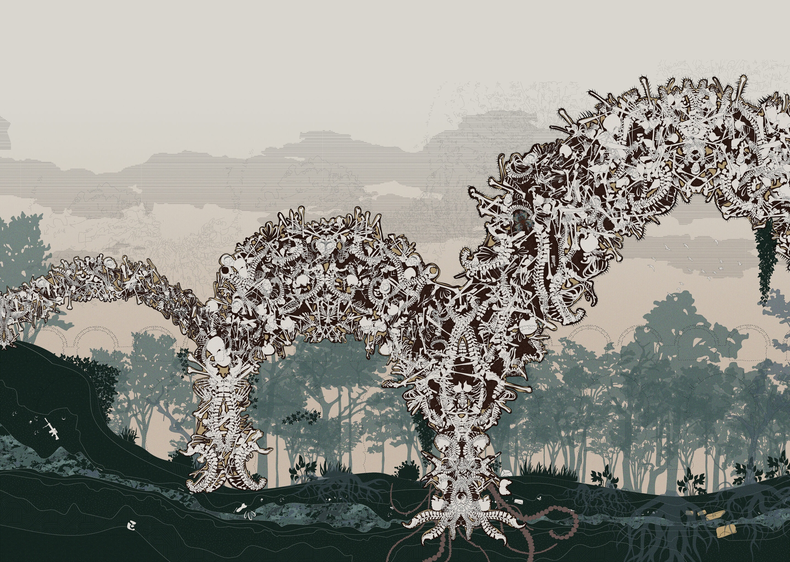
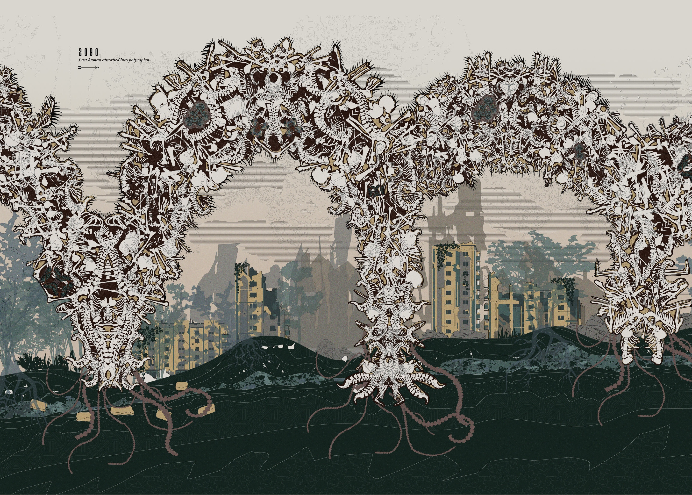

2022
THE METAMORPHOSIS OF THE POLYSAPIEN
Bio-Mythology and Anatomic Fabulation
“My mind now turns to stories of bodies changed into new forms.” — Ovid, Metamorphoses
“The part always has a tendency to unite with its whole in order to escape from its imperfections.” — Leonardo da Vinci
CONTEXT
Core I Studio + Independent Study, MIT
LOCATION
Jamaica Plain, Planet Earth
SUPERVISORS
Mohamad Nahleh, Jeffery Landman, Brandon Clifford
SUPPORT
CAMIT Art Grant + Harold Horowitz Student Research Fund
PUBLICATION
The Polysapien is a speculative bio-mythology about collective human evolution. It asks how bodies might adapt, combine, and transform in response to architecture, environment, and one another.





THE METAMORPHOSIS OF THE POLYSAPIEN — BOOKLET